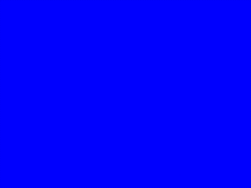

RandomAnim is part of a collection of JQuery plugins that will animate text in various random ways.
I created these plugins to:
- brush up on my JavaScript and CSS skills
- improve my JQuery
- learn new HTML5 and CSS3 technologies
- learn more about the Google Font API
- learn more about GitHub
There are 4 different plugins:
- Random letter styles
- Random font families
- Word zoom (TBA)
- Kaleidoscope letters (TBA)
These plugins are based on Director animations I made more than 20 years ago. I used these animations to get my first job as a multimedia developer in 1994 :) Here's an animated gif of one of them:
